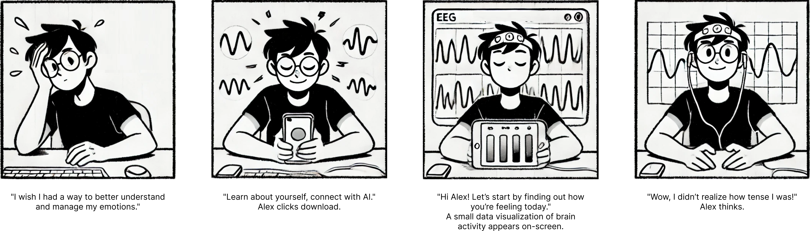
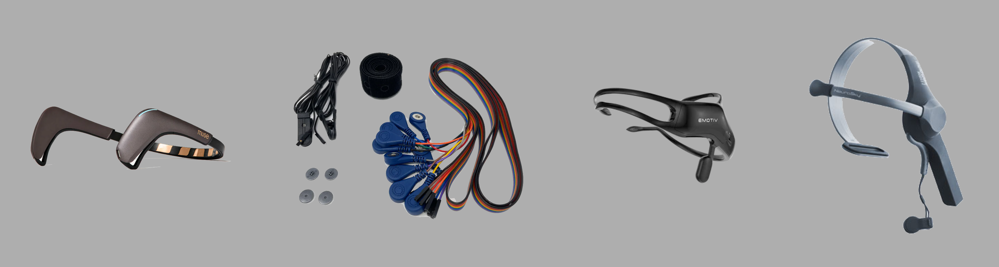
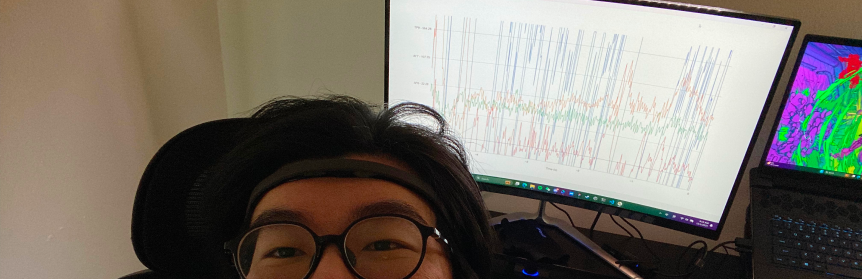
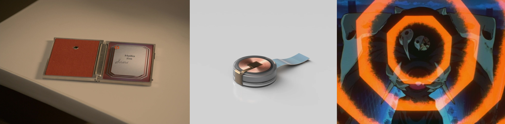
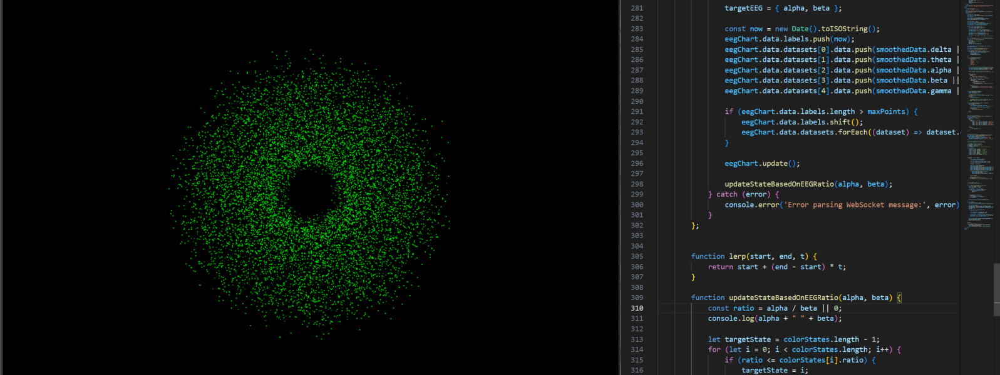

Can a machine listen to the whispers of your soul?
Initiative
In an era of rapid AI evolution, people often ask: where is the line between AI and living beings? A common answer is that AI lacks feelings. But is that really true? What does it even mean to "feel"?
Today, neurotechnology has advanced to the point where mental states can be partially monitored as data streams. This experimental project combines these cutting-edge technologies to create an AI bot with an innovative interactive interface. Designed to support well-being, the bot also explores how AI perceives and responds to emotions.
Research & Ideation
This project was inspired by my first neuroscience course, where I was fascinated by the idea of representing human minds as data. It got me thinking about the potential for a new generation of interfaces (BCI) and whether AI could be trained using this data. Although the project only required entry-level neurotech knowledge, I had to dive deeper into academic research and prepare for processing EEG signals. Based on my understanding of the technology's capabilities and potential outcomes, I developed a simple user persona.
Finding the right hardware was also crucial. I chose a consumer-grade device to make testing accessible to a broader audience, ultimately selecting the Muse 2 for its portability and affordability.
Product Design & Development
My first step was to build a simple prototype to retrieve data from the device and display it in a chart. However, I found that the headset often introduced significant noise when not worn properly or disrupted by user movements. Since these issues are difficult to control, I implemented a data processing algorithm to filter out outliers and normalize the data for better comparison.
The frontend design was inspired by Neuralink's functional minimalism, EVA's dynamic AT Field visuals, and the sleek mystery of the device in Her. These elements guided me to create a blackhole-shaped display, using color and particle movements to represent different mental states.
Then, as planned, I integrated the LLM with processed numerical data and corresponding states. This allowed it to recognize basic emotions or at least a binary mental state. I refined the data processing algorithms through several iterations for better accuracy. Using Three.js, I created a dynamic particle system with BufferGeometry and PointsMaterial, where particle movements are driven by EEG data processed via WebSockets, visually representing mental states in real time.
Outcome
• Engaged 20+ participants to interact with the system, gathering valuable insights on usability and the emotional accuracy of the AI's responses.
• The most frequently mentioned word in the feedback was "special", highlighting how users found the experience unique and unprecedented. Some even felt it understood their emotions better than they did themselves.
• 50% of participants agreed that the AI bot has potential well-being support value, helping users recognize and manage their emotions.
• While this simple implementation doesn’t enable the AI to actively generate feelings or emotions, it does allow for a basic understanding of them, offering a novel user experience. It showcases the potential for brainwave-driven emotional AI systems.